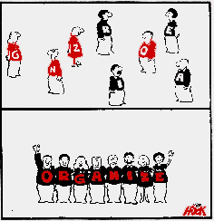
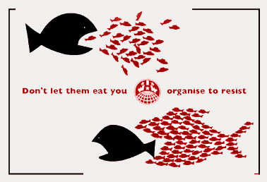
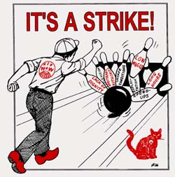

What is a Union?
By the San Francisco Bay Area General Membership Branch (1998)
Bosses can do whatever they want when there's no Union. And that means anything. They can cut your pay, they can fire you. There are no limits to their power and control over your working life, because--one on one--nobody is a match for the boss. How can you win an argument with somebody who can fire you?
 Workers found out a long time ago that they didn't have power at work as individuals--but if they worked together as a united group, they could win some control over their working lives, gain their own voice in workplace decisions. And that's what a union is: An organization of everybody who works for a boss, using their collective strength to:
- Stop the boss from doing what the workers don't want --like firing employees without just cause, awarding jobs or higher wages based on favoritism or discrimination, or treating the workers unfairly and with disrespect; and
- Make the boss do what the workers want -- like paying better wages, providing health care and paid time off, and treating workers with human dignity.
It's important to understand why this conflict exists in the first place. It doesn't arise because the bosses are evil and we are good. Somebody goes into business, buys machinery and raw materials and then needs one additional thing to make money: Workers like you!
And that means unemployed workers, because they're people who need a job badly enough to come to work for whatever the boss wants to pay. A large pool of unemployed workers has always served the bosses' purposes. There have always been millions of unemployed people. The fact is that your wages and the boss' profits come out of the same pot of money. Therefore, the smaller your paycheck gets, the bigger the boss' paycheck is.
Typically, the bosses and their top managers receive hundreds of thousands of dollars in annual salaries and fringe benefits. Bosses make a budget to decide how to spend the company's money for the year. The bosses try to spend this pot of money the way they want. Because they get to keep all the leftover money after some is spent on materials, expanding the business, and paying the workers, the bosses try to pay you the lowest wage you will tolerate and still work.
Before there were unions, all bosses did whatever they wanted. If they wanted more money for themselves, they took it. If a supplier raised its prices, they paid them. Then many workers organized into unions, and they discovered that they had the power to demand their fair share of the budget--working people, acting collectively, could raise their prices, too. That's why bosses don't like it when workers organize into unions, it cuts into "their" share of this pot of money.
After you and your fellow workers decide to organize into a union, the IWW will help you build the shopfloor solidarity you'll need to force the boss to do what you want and stop doing what you don't want.
A common tool unions have used to secure the gains workers have won through struggle is by negotiating a truce with the boss. This temporary "peace treaty" is usually put in writing, and is called a collective bargaining agreement, or a union contract. The IWW will assist you in negotiating yours.
Then, when new workers are hired, they'll go to a job orientation, where management will explain what a great wage they'll be paid and what generous benefits they'll receive. But soon they'll discover that--lo and behold!--all the things the bosses say they're giving them out of the goodness of their hearts are written in the union contract. Rarely does anybody get a dime more.
These things are not gifts. A union contract represents what the workers have forced management to do or not do. A contract represents gains made through the collective power of the workers on the shop floor. It's the result and the record of struggles and sacrifices by past and current workers to get what they want.
 A union contract is very different from a contract to buy furniture, a car, or a house. if contracts like that are violated, you have to go to court to get a judge to enforce them.
But your union contract is enforced by you. If you don't enforce your contract, the bosses will get to do whatever they want and the contract won't be worth the paper it's printed on.
Union contracts are enforced by workers on the job. The union's way to accomplish this is with job shop membership meetings, followed by actions determined by the members that demonstrate the collective power of the union in your workplace. Such membership meetings are democratic, happen at least once a month, and they help your organization grow in strength and solidarity, to present the united voice of all your fellow workers.
One tool we use to enforce the contract is the grievance procedure. Specially-trained union officers, called shop stewards, will assist you in using it. To enforce the contract effectively, workers in each department and shift elect one of their own as their shop steward. Then the union sends them to a class to learn labor law and skills they need to help you make sure your contract rights are upheld on the job.
The job shop membership meeting and the shop stewards must work hand in hand to enforce the contract and stop the boss from doing what you don't want and make the boss do what you want.
A body called a stewards' council may be set up to compare notes from grievances and formulate a coordinated strategy to solve problems that arise at work.
Sometimes bosses might tell you that they cannot give you what you want because the union contract doesn't allow it. Don't ever believe it--not even for a second. The contract guarantees minimum wages, benefits, rights and conditions, and doesn't ever prevent the boss from giving you more.
The idea that the boss is one party to the contract, the union is a second party and the workers are a third party is absolutely not true. The union, at its most basic level, is exactly what we have described-an organization of members who work for the same boss. When bosses criticize or attack the union, they are criticizing and attacking you and your fellow workers.
How is the contract enforced? When a member has a problem, he or she discusses it with a shop steward, or brings it up at a membership meeting. The shop steward investigates the problem to find out how the contract has been violated. The shop steward considers and recommends various courses of action to address the problem, such as:
- calling a shift, department or full job shop meeting to discuss direct actions everybody can take to tackle the issue;
- holding a conference with the worker(s) and manager(s) involved to try and find a solution to the problem;
- presenting the problem at the next stewards' council meeting to get advice about how to handle the problem; or
- filing a formal complaint or charge, called a grievance, against the boss
Remember, the members are the union. The members as a whole own the contract. Collectively, the members decide whether a problem is a grievance or should be dealt with in some other way. Shop stewards are just the people who carry out the membership's policies on contract enforcement between meetings.
When a member has a problem, it's important to discuss it with the shop steward immediately, because the contract may have time limits for filing grievances.
It's essential that every member attend meetings don't want.
You might have heard that when you organize a union in your workplace, you're required to pay an initiation fee and monthly dues, to join the union and remain a member in good standing. That's true. Here's how it all works:
The IWW initiation fee is equal to your monthly dues rate. It's a onetime fee you pay to defray the cost of materials you get as a new member. The union constitution forbids unaffordable initiation fees and dues, because we believe the union should be accessible to all workers regardless of income, skill level, or whether they're working or not.
The IWW's basic dues formula is set by the membership in a union-wide vote. It's based on your monthly income.
The dues rate for the IWW is as follows:
- Minimum Dues = $6.00 (US) per month - if you make less than $1,000.00 (US) per month;
- Regular Dues = $12.00 (US) per month - if you make between $1,000.00-$2,000.00 (US) per month;
- Maximum Dues = $18.00 (US) per month - if you make more than $2,000.00 (US) per month.
Half of your basic dues pays for:
- expenses--like phone bills, rent, postage, taxes, and auditing of the union's General Administration;
- wages of the General Secretary-Treasurer and his office staff, who all earn only $12.50 hourly (most of the staff at the General Office are part-time volunteers);
- [note - at the time this was written the rate was only $10. Confirm price with Alexis]
- production and distribution of the union's General Organization Bulletin, a publication for internal union discussion and financial accountability;
- a monthly union newspaper, the Industrial Worker, whose editor is also an unpaid volunteer; and
- printing costs of our basic union literature, such as the general union constitution and our Red Cards (membership dues books).
The other half of your basic dues pays for your local General Membership Branch (GMB) or Industrial Union Branch (IUB) to maintain an office and other important infrastructure to continue to make militant, democratic, rank-and-file unionism available to other low-income workers who so desperately need it.
The IWW's basic dues formula takes into account only the minimum amount of funds that are absolutely necessary to ensure the continued existence and functioning of the general organization and the local membership branches. Basically, it's the price you pay for the union in your shop to be affiliated to an international organization that can mobilize all its members and resources in your defense when you call upon it for aid.
But your basic dues won't be enough to cover all the expenses your shop will have to deal with. You and your fellow workers will har freedom on the job.
- Organizing Fund: So long as we bring new workers into our family--look out for working people who need a better life and help them in their fight to achieve it--we'll always be strong. We'll never lose what we win if we fight together with others; they'll want to fight with us when our time comes. This is a responsibility we all share.
- Strike Fund: All workers should plan ahead for the next fight. The bosses are well funded -from the sweat off our backs. They use the money we make for them to undermine us when we're most vulnerable. We need an advantage, and if we have a way of sustaining ourselves when we decide to withdraw our labor, we'll be better able to survive their attacks.
The Union won't tell you exactly how to plan for your needs. You'll have to figure that out for yourselves. But we do suggest that you consider voting for more dues instead of less. While you can seke in our future and that of the generations who'll come after us.
Most other unions have a dues checkoff, a system that lets the boss withhold your dues from your paycheck each month and then write a check to the union covering everybody's dues. The IWW, however, doesn't believe in this kind of dues collection system. As a matter of fact, our general union constitution forbids any IWW job shop or industrial union local from instituting any dues collection system in which the employer acts as a middleman between the members and the Union.
 Instead, we have specially-trained union officers, called delegates, who are elected by members in the shop from among themselves. Delegates are equipped with dues stamps, which serve as receipts, proof that members' dues are paid up. During the first week of each month, the delegate will walk through the workplace and collect all members' dues and affix the stamps in their books. He or she will then do some simple accounting on a form provided by the union and submit all the dues moneys and paperwork to the union office in his or her delegate's report.
Our delegate system stretches back to the early years of our union, and has been kept alive because we believe in maintaining rank-and-file control in our organization.
A union is different from any other organization.
If you organize a social club or a sports team, you get to choose who belongs to it. Not so with the union. It's an organization of everybody who works for a boss that uses its collective power to stop the boss from doing what we don't want and make the boss do what we want. Normally, we don't have a choice who the boss hires, so we must organize everybody. That means we must convince each worker, including new hires, of the importance and necessity of our union.
Employers are a very tiny part of the population, but they exercise a great deal of influence. That's the way they'd like to keep it. But working people represent the vast majority of the population. To undermine the great potential for power we have as workers, the bosses use many wedges to keep the working class divided against itself, including:
- Racism, bigotry against African Americans, Native Americans, other racial and ethnic minorities, and immigrants;
- Sexism, a widely practiced form of discrimination based solely on gender;
- Homophobia, discrimination based on sexual orientation;
- Skill Divisions, a form of discrimination pitting white collar workers against blue collar workers, technical workers against service workers against clerical workers against laborers; and
- Skill Divisions, a form of discrimination pitting white collar workers against blue collar workers, technical workers against service workers against clerical workers against laborers; and
- Redbaiting, a form of bigotry the bosses use to pit less class-conscious workers against others who espouse working-class unity and militancy
And the list goes on.
The bosses practice this divisive manipulation both subtly and blatantly. The bosses use attacks on immigrant workers, ballot initiatives against affirmative action, the English-only movement, attacks against workers' rights to organize freely and participate in society, media slurs against "welfare mothers' and other propaganda to deceive us. If they can keep working people apart, they can maintain their wealth and power.
We fight this bigotry in two ways. First, we support movements that struggle against discrimination or prejudice of any kind. We fight for a new society in which all will be equal, as sisters and brothers. And second, we have a simple standard: All workers have the absolute right to be judged solely on their relations to fellow workers and their conduct as a union members-regardless of what they look like, regardless of where they come from, regardless of what language they speak, regardless of anything. We believe an injury to one worker is an injury to all workers.
The power of the union comes from bringing together everybody the boss hired. It must be a democratic organization with room for everybody. We believe: Whatever divides us is bad, whatever unites us is good.
The power of the union comes from what you put into it, not what you take out of it. The bosses are increasingly taking back more and more of the gains we've won over generations of struggle and sacrifice. The government is more than happy to assist the employing class in their drive to take away our security. The recent loss of overtime pay after eight hours for all workers in California is just one example. It takes a lot of unity to win our battles against the bosses, and we can expect more battles for as long as workers want to have a say in their wages, benefits, rights and working conditions.
Our union functions by means of meetings. When we have a need to get something done, we usually form a committee to get the work off the ground and carry it out. One of these committees is the Organizing Committee that's working with you to bring workplace democracy, higher wages, medical and dental benefits for you and your families, more free time, and better working conditions to you. We encourage you to become involved by participating in one or more of the union's committees locally.
You are invited to join the IWW and fight with us for a better way of life for all the world's workers. We are building a great union and we need your active involvement to keep it strong.
If you wish, you may download a PDF Version of this document.